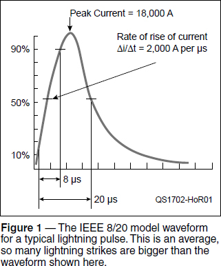
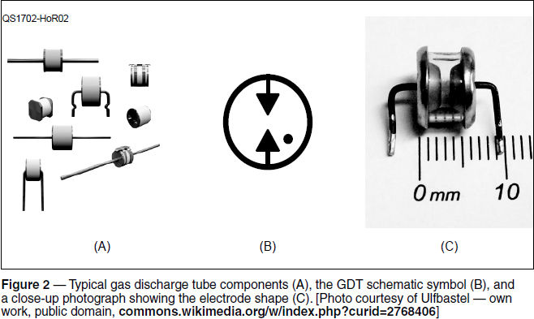

Experiment #169 — Gas Discharge Tubes
In experiment #121, I covered transient protection for the various insults that occur in vehicles and other power systems.1 Protection from a lightning strike, either direct or indirect, requires special, sterner measures across your station, though. First, let’s back up and understand what we’re protecting against.
Lightning Energy
A typical lightning strike is composed of three to four impulses per strike. Peak current for the first pulse averages around 18 kA (98% of the strikes fall between 3 kA to 140 kA at their peak). For the second and subsequent impulses, the current will be about half the initial peak. The typical interval between impulses is approximately 50 ms. Figure 1 shows a typical impulse, referred to as the IEEE 8/20 model waveform. Remember, this is an average, and half of lightning strikes have more energy than this waveform!

Voltages created by this current pulse can be enormous and depend on the resistance (R) and inductance (L) through which the current flows. According to Faraday’s Law, the faster that current changes (Δi / Δt, where the Greek letter delta, Δ, means “the change in”) through an inductance, the higher the voltage that is created. Higher current through a resistance also means higher voltage, per Ohm’s Law:
V = I × R + L × Δi/Δt
While the majority of lightning’s energy is pulsed dc, there is a substantial amount of RF created by the fast rise time of the pulses. A typical strike rise-time of 1.8 μs translates into a radiated RF signal peaking at 139 kHz. Rise times can vary from a very fast 0.25 μS to a very slow 12 μS, yielding an RF range from 1 MHz down to 20 kHz. When lightning “attaches” to the air terminal (where the leader channel reaches the grounded object), the rise time for current can be as short as 10 nS. The result is that lightning’s energy extends upward in frequency to 10 MHz and higher.
Clamping a Lightning Transient
What causes the damage when lightning strikes — voltage or current? The answer is both! That’s a lot of energy, and a lot of spectrum. The combination of high energy and wide spectrum makes protecting equipment a difficult challenge.
Any protection device that depends on internal resistance to dissipate the energy as heat will still produce high voltages even from indirect strikes. Putting inductance in series with the transient might help at low frequencies, but is incompatible with RF receiving and transmitting equipment.
While disconnecting equipment is nearly foolproof, it’s not always possible or practical. We need something that will divert the transient energy away from equipment inputs or outputs. Whatever we employ, it has to be “invisible” until it is triggered. Then it must activate quickly enough not to pass damaging energy, and to remain activated until the transient event is over, then return to invisibility until the next event. It must require no power to operate and be insensitive to RF.
The only component with the characteristics we need and that can withstand repeated transients is the gas discharge tube or GDT.
GDT Basics
Several examples of GDTs used by amateurs are seen in Figure 2. The photograph of a GDT shows the shape and placement of the metal electrodes. They are typically made of tungsten or some other tough metal that can withstand repeated short arcs. The schematic symbol includes a small dot next to the electrodes. This indicates the presence of gas. A proprietary combination of gases is used, along with electrode spacing, to control the breakdown voltage. Once an arc is created, the resistance between the electrodes is quite small until the arc current falls and is quenched. The GDT is then inert until the next transient.

The GDT is a type of crowbar protection. As stated in the Littelfuse GDT catalog:
A crowbar device limits the energy delivered to the protected circuit by abruptly changing from a high-impedance state to a low-impedance state in response to an elevated voltage level. Having been subjected to a sufficient voltage level, the crowbar begins to conduct. While conducting, the voltage across the crowbar remains quite low…and thus, the majority of the transient’s power is dissipated in the circuit’s resistive elements and not in the protected circuit nor the crowbar itself. This allows the crowbar to be able to withstand and protect loads from higher voltages and/or higher current levels for a greater duration of time than clamping devices.2
A similar type of crowbar device is a spark gap or air gap protector. Spark gaps can be easily made from common materials, and ARRL publications have many examples, including the use of automotive spark plugs for open-wire feed lines.
When most amateur equipment used vacuum tubes, a spark gap might have been enough protection. After all, the tubes themselves operated with voltages of several to many hundreds of volts and could withstand even short arc-overs. Transistors and integrated circuits (ICs) are much less forgiving. Once breakover voltage is reached and the arc is established, a typical GDT limits the voltage across the electrodes to 15 V or so, which is well within the safe voltage range for nearly all radio equipment.
Applying GDT Protection
As you can see in Figure 2, there are lots of different styles of GDT packages. The leaded and cartridge packages are the most common in amateur stations. GDTs are rated by breakdown voltage and energy handling ability. The Littelfuse CG-series is suitable for most amateur applications.
For protecting dc or low-frequency control and telephone lines, the leaded package is the most common. These components can be connected to screw terminals or barrier strips. For rotator control lines, measure the root mean square (RMS) voltage from the control box and multiply by 1.414 to get peak voltage to ground (2.8 for peak-to-peak). Add another 10 – 20% to provide a margin and determine the required breakdown voltage. Remember that telephone line ringing voltage can be as high as 150 VPK-PK.
At RF and especially in circuits that must withstand transmitter output voltages, a cartridge-style GDT is used. Shown in Figure 3 is a set of four lightning protectors with UHF connectors for attaching to feed lines. The GDT is connected between the shield and center conductor of the feed line, with the protector body also mounted on a grounded metal mounting bracket. Several QST advertisers offer these protectors for either low-power for full legal-limit operation.

There are two caveats for using these protectors. You still need a good ground system for full lightning protection, including a lightning protection plan and bonding for all protected equipment. (See the 2002 series of QST articles by Ron Block, KB2UYT, at www.arrl.org/radio-technology-topics under “Safety.”)
You should also be aware that there are two basic versions of the commercial protectors: one that passes dc current and one that does not. If you plan on using a remote device, such as a preamp or antenna switch that requires feed line power, be sure not to purchase the dc blocking version. A call to the vendor will help you make the right choice.
Notes
1All previous Hands-On Radio experiments are available to ARRL members at www.arrl.org/hands-on-radio.
2Littelfuse Inc., Gas Discharge Tube (GDT) — Product Catalog and Design Guide, 2015, www.littelfuse.com.